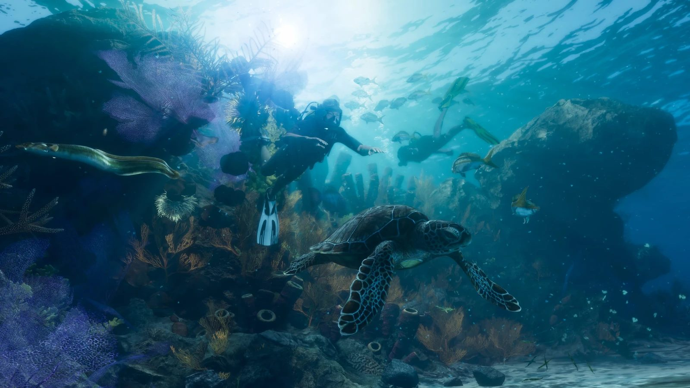

Island Dreams: dive for treasure, rescue Dobbs, face the shark

Mission facts
- Chapter: Chapter 1 — mandatory story mission, needed for 100% completion. (Reported)
- Mission number: the 9th main mission in Chapter 1, by most trackers. PowerPyx lists it 10th because it counts the two missable optional missions that can appear before Hey Arnold!. (Reported)
- Given by: Kenton. (Reported)
- Unlock: finish Hey Arnold!, then follow the "Work for Kenton" marker. (Reported)
- Where: starts at Island Dreams Boat Charters, a yellow building on the waterfront on the north-east side of Key Lento; the dive is a little under a mile offshore. (Reported)
- You play: Jason. (Reported)
- Reward: $400 cash, Kenton as a phone contact, and the Search the Dive Sites activity unlocked. (Reported)
- Next mission: Feng Shui. (Reported)
Where Island Dreams starts
After Hey Arnold!, a "Work for Kenton" marker appears on the map in Key Lento. Follow it to Island Dreams Boat Charters on the waterfront — a yellow building with Kenton's boat tied up right outside and the bachelor party already on board. Inside, Kenton is behind the counter. He tells Jason the waters around Leonida are full of treasure that sells for a high price, and he will lend Jason his boat and scuba gear — but first Jason has to escort a bachelor party on a scuba-diving trip. The dive is the cover: while the tourists look at the reef, Jason is really there to hunt for sunken treasure. (Reported)
Step by step
- Talk to Kenton inside Island Dreams Boat Charters in Key Lento.
- Take the wheel of Kenton's boat and follow the pink route out to the dive spot.
- Put on the scuba gear at the back of the boat (Triangle / Y), then jump in with the bachelor party.
- Escort the three divers — Kyle, Jeremy and Dobbs — through the underwater trench to the shipwreck.
- Equip the metal detector and find 3 gold doubloons buried in the sand around the wreck.
- Free Dobbs from the metal grate in the shipwreck, then pick up the 4th doubloon underneath.
- Deal with the shark: shoot it with the speargun, or let it take Dobbs.
- Swim back to the surface and return to the boat to finish the mission.
Before any mission like this, a manual save is cheap insurance — GTA 6 has no mission replay (Reported).
The boat ride and the dive
Once Kenton introduces you to the bachelor party, take the wheel of the charter boat and follow the pink route on the minimap out to sea. The dive spot is a little under a mile from the dock, so the ride is short. When Kenton tells you to stop, walk to the back of the boat and find the scuba tanks by the swim platform. Approach the scuba gear and press Triangle on PS5 or Y on Xbox to put it on — Kenton also gives you a speargun for defending yourself underwater. Wait for the three divers to get in, then jump in after them. (Reported)
Swimming controls: hold L3 / LS to swim faster, L2 / LT to strafe, R1 / RB to dive deeper and Cross / A to rise toward the surface. Follow the divers' pink dots on the minimap through the narrow underwater trench — a coral tunnel that leads down to the dive site. Keep an eye on the oxygen bar in the top-left corner of the screen while you are down there. Our controls guide covers swimming in full. (Reported)
Finding the treasure
At the end of the trench you reach the shipwreck. Reaching it also records an Underwater Discovery — the wreck is one of 33 Underwater Discoveries to find across Leonida. Kenton now asks you to search the seabed around the wreck for treasure. Open your loadout with L1 / LB, highlight the metal detector and release to equip it, then hold L2 and R2 (LT and RT) to scan. The detector flashes green when you are pointing near a treasure site, and the flash — and the beeping — gets faster as you get closer. When you are right on top of a buried spot, a prompt appears: press Triangle to dig it up. (Reported)
There are 4 gold doubloons in this mission. Three are buried in the sand around the shipwreck — trackers place them just north-east and just east of the wreck — and the 4th only appears after you rescue Dobbs (see below). The doubloons are the mission's real prize: gold doubloons can be sold to Kenton or at pawn shops, and finishing this mission unlocks more dive sites to search later. If you miss any treasure here, don't worry — once the mission is done you can revisit this and other shipwrecks to collect what you left behind. (Reported)
Rescuing Dobbs
While you are searching the wreck, Dobbs gets himself stuck inside the shipwreck, pinned under a metal grate. Stop looking for treasure and swim to the bachelor party. Raise the metal grate so Dobbs can swim free — then, before you follow him out, look underneath where he was trapped: the 4th gold doubloon is buried right there. Pick it up now, because this is your only chance to get it during the mission. (Reported)
The shark: shoot it or let Dobbs be eaten
Dobbs' legs are bleeding from the wreck, and the blood draws a shark. As you swim back toward the boat, the shark attacks — and you get a real choice. Equip the speargun and shoot the shark in the head to drive it off, or do nothing and let it take Dobbs. (Reported)
Shoot the shark (recommended): Dobbs survives, and the ending cutscene shows all three friends thrilled to have made it out alive. Let Dobbs be eaten: the shark drags Dobbs away and only his two friends survive; the cutscene shows them traumatised by the loss of the groom's best man. Either way the mission completes and the rewards are exactly the same — the choice changes only the cutscene, not your payout. Saving him is the better experience, and it fits Jason's character: the reliable one who gets people home. (Reported)
What happens after
Once you are back on the boat, cutscenes finish the mission. You keep the $400, Kenton becomes a phone contact, and the Search the Dive Sites optional missions unlock — more shipwrecks across Leonida to dive for treasure, which you can sell to Kenton or at pawn shops for quick cash. Our how to make money guide covers treasure diving among the early money methods. The next main mission is Feng Shui. (Reported)
Tips
- Get the 4th doubloon before you leave the wreck. It only appears after Dobbs is freed, and it is easy to swim off without it. (Reported)
- Watch your oxygen. The bar sits in the top-left of the screen — don't get so focused on the metal detector that you run it down. (Reported)
- Don't rush the treasure search. The bachelor party waits around the wreck while you scan, so take your time with the metal detector. (Reported)
- Save first. There is no mission replay, so a manual save before you start lets you redo the shark choice if you want to see the other cutscene. (Reported)
Previous and next missions
Island Dreams unlocks after Hey Arnold!, in which Jason meets Kenton at Brian's house. In the order most trackers list Chapter 1, the next mission is Feng Shui — but several Chapter 1 missions are open at the same time, so your own order may differ. See the full list on our GTA 6 missions page. (Reported)
FAQ
How do you start Island Dreams in GTA 6?
Finish Hey Arnold!, then follow the Work for Kenton marker to Island Dreams Boat Charters on the waterfront in Key Lento and talk to Kenton inside the shop. (Reported)
Where is the treasure in Island Dreams in GTA 6?
Use the metal detector around the shipwreck at the end of the trench: 3 gold doubloons are buried in the sand there, and a 4th appears under the wreck after you rescue Dobbs. (Reported)
How do you rescue Dobbs in Island Dreams in GTA 6?
Dobbs gets stuck in the shipwreck under a metal grate. Swim to him and raise the grate so he can swim free, then pick up the gold doubloon underneath before you leave. (Reported)
Should you shoot the shark or let Dobbs be eaten in Island Dreams?
Shoot the shark with the speargun and Dobbs lives; let it eat him and he dies. The mission still completes and the $400 reward is the same either way — only the ending cutscene changes. (Reported)
What mission comes after Island Dreams in GTA 6?
Feng Shui is the next main mission. (Reported)
Sources checked 26 November 2026: PowerPyx, Game8, Video Games Chronicle, KeenGamer, NerdsChalk and RareThief walkthroughs — they agree on Kenton as the giver, the Hey Arnold! unlock, the bachelor-party escort through the trench, the metal-detector treasure hunt, the Dobbs rescue and the shark choice with unchanged rewards; they differ on the exact mission number, and that difference is marked on this page. Labels: Confirmed = officially stated or multiply verified; Reported = claimed by sources, not yet officially confirmed; Not announced = no reliable information yet. Walkthrough steps come from player guides and may vary or be patched.